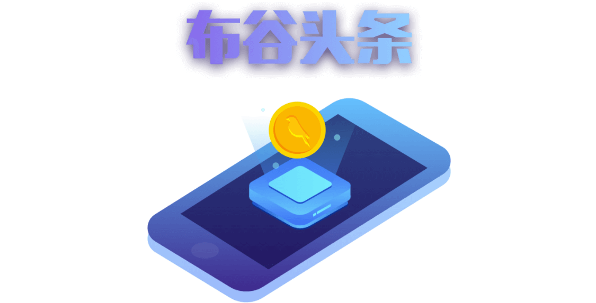

什么是谷粒？
谷粒是一种数字资产。
谷粒未来可用于布谷头条上的消费、兑换、商城活动等交易，是布谷头条依托于区块链底层技术，基于用户行为分配的类似于比特币的资产。
谷粒与比特币有什么异同？
谷粒与比特币的共同点在于投资价值。比特币诞生之初，一名美国程序员用10000枚比特币购买了两块棒约翰披萨，7年后，比特币从每枚不足0.1美元上涨到20000美元，以2017年的比特币价格，该程序员相当于用13亿人民币购买了两块披萨。而谷粒，现在才刚刚开始。
Bitcoin（USD）Price

谷粒与比特币的不同点在于理念。获得原始比特币需要用户，而布谷头条通过搭建生态帮助用户免费获取谷粒。因为我们认为，用户在互联网的行为长期被忽视，用户浏览内容、评价分享等等行为都在创造价值，而用户并没有获得收益。布谷头条的核心理念在于将自身、广告主、用户整合形成一个系统的共赢生态，把用户在应用里的操作行为都变成回报，回馈谷粒。

谷粒怎么分配？
谷粒总量10亿枚，永不增发，同时设置其中的70%为矿池，从产品正式上线第一天起，每天释放50万枚谷粒，每两年释放量减半，用户按自身算力获得相应谷粒。布谷头条的用户数据记录在区块中，真实有效、不可篡改、公开透明，随着时间的推移获取难度越来越大，前期参与会获得更大优势。

怎么增加算力？
算力代表用户对布谷头条平台生态的贡献价值，而谷粒的获取需要算力，每一个用户都能通过参与布谷头条社的任务获得算力。完成的任务越多，算力越高；参与越早，算力越高，得到更多数量谷粒的可能性也越高。每台云矿机将会在一定时间内开采出一定数值的谷粒矿，需要人工来收取，若未及时收取，或者长期不登录，矿机将停止挖矿。
如何获取当日分红谷粒？
平台每日0：00：00进行谷粒矿产分配，分配原则主要根据用户的贡献度即当日活跃算力为主要因素。 用户可在第二天登录布谷头条就，进入挖矿页面，点击谷粒图标既可以收集矿池中的谷粒分红 ，当日分红谷粒领取48小时领取有效，过时则消失；
如何获取谷粒？
当日分红谷粒＝当日活跃算力＊分配权重值
分配权重值和累计总算力有关
累计算力0～200 权重值 0.25%
累计算力200～300 权重值 0.30%
累计算力300～400 权重值 0.35%
累计算力400～500 权重值 0.4%
累计算力500以上 权重值 0.5%